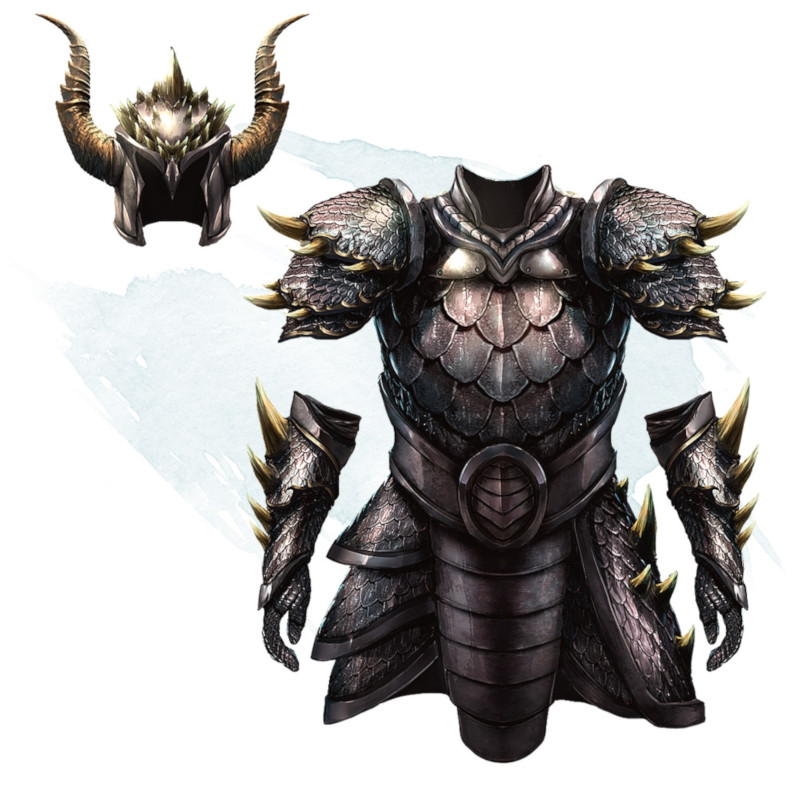

Dragon Scale Mail
Armor (scale mail), very rare (requires attunement)
Dragon scale mail is made of the scales of one kind of dragon. Sometimes dragons collect their cast-off scales and gift them to humanoids. Other times, hunters carefully skin and preserve the hide of a dead dragon. In either case, dragon scale mail is highly valued.
While wearing this armor, you gain a +1 bonus to AC, you have advantage on saving throws against the Frightful Presence and breath weapons of dragons, and you have resistance to one damage type that is determined by the kind of dragon that provided the scales (see the table).
Additionally, you can focus your senses as an action to magically discern the distance and direction to the closest dragon within 30 miles of you that is of the same type as the armor. This special action can't be used again until the next dawn.
While wearing this armor, you gain a +1 bonus to AC, you have advantage on saving throws against the Frightful Presence and breath weapons of dragons, and you have resistance to one damage type that is determined by the kind of dragon that provided the scales (see the table).
Additionally, you can focus your senses as an action to magically discern the distance and direction to the closest dragon within 30 miles of you that is of the same type as the armor. This special action can't be used again until the next dawn.
| Dragon | Resistance |
|---|---|
| Black | Acid |
| Blue | Lightning |
| Brass | Fire |
| Bronze | Lightning |
| Copper | Acid |
| Gold | Fire |
| Green | Poison |
| Red | Fire |
| Silver | Cold |
| White | Cold |
Dungeon Master´s Guide (SRD)
